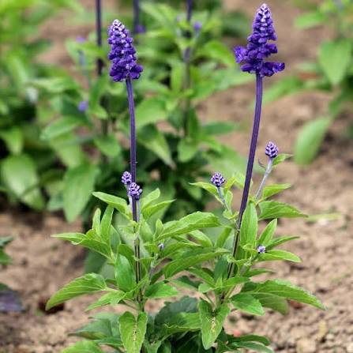

Jardim da Biodiversidade - Horta Escolar Viva

Nome científico: Salvia farinacea
Família botânica: Lamiaceae
Origem: América do Norte
Cor das flores: Azul-violeta
Época de floração: Primavera, verão e outono.
Vaso na Horta Escolar Viva: 🟢 Verde
A Sálvia Farinhenta Azul Vitória é uma planta ornamental com flores azul-violetas reunidas em espigas.
Suas flores deixam o ambiente mais colorido e ajudam a aproximar os estudantes da observação da biodiversidade.
Suas flores atraem abelhas, borboletas e outros polinizadores, contribuindo para o equilíbrio ambiental.
Na Horta Escolar Viva, representa a importância das flores ornamentais na preservação da biodiversidade.
O nome "farinhenta" está relacionado ao aspecto esbranquiçado de algumas partes da planta, que podem parecer cobertas por uma fina camada de farinha.